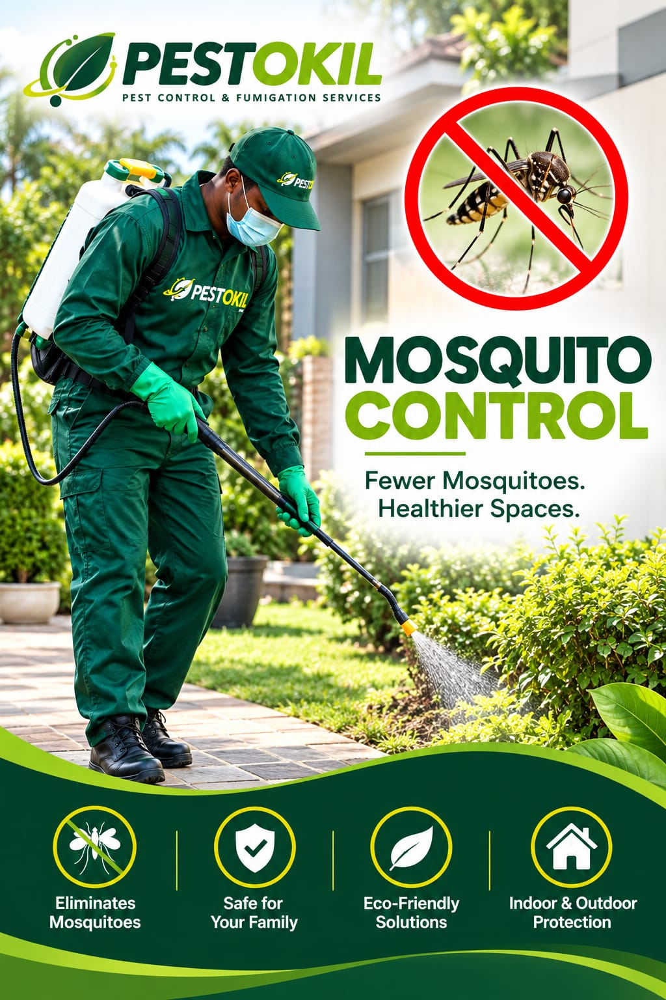

Practical guidance
1. Remove standing water from containers, gutters, plant trays and other items around the property where practical
Remove standing water from containers, gutters, plant trays and other items around the property where practical.
2. Keep drains clear and address persistent pooling water or drainage problems
Keep drains clear and address persistent pooling water or drainage problems.
3. Keep grass and vegetation managed in areas where mosquitoes can rest, while recognising that treatment may still be needed
Keep grass and vegetation managed in areas where mosquitoes can rest, while recognising that treatment may still be needed.
4. Use screens and keep doors closed where practical to reduce indoor entry
Use screens and keep doors closed where practical to reduce indoor entry.
5. For persistent outdoor mosquito pressure, ask for an inspection so the treatment can target the actual property conditions
For persistent outdoor mosquito pressure, ask for an inspection so the treatment can target the actual property conditions.
Need professional help? Pestokil provides pest-control services in Nairobi. Treatment scope, preparation, safety instructions and any follow-up terms are confirmed for the actual property.